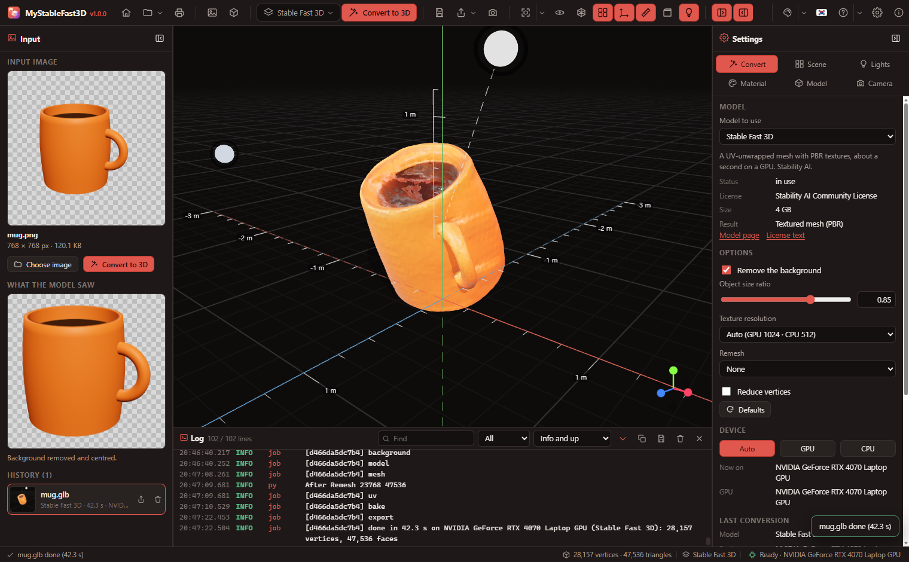
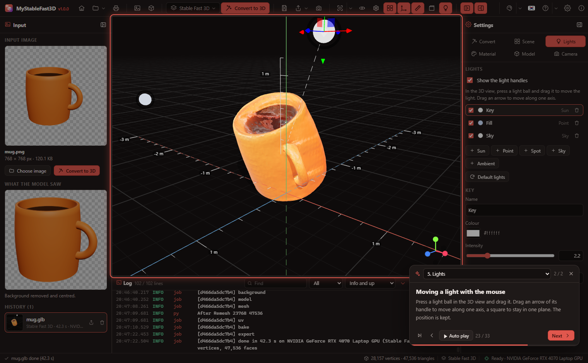
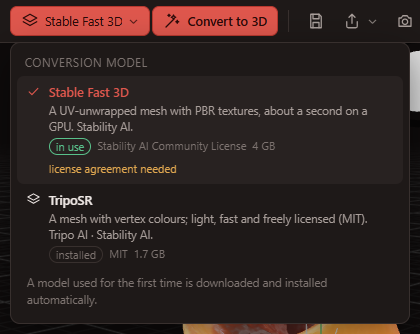
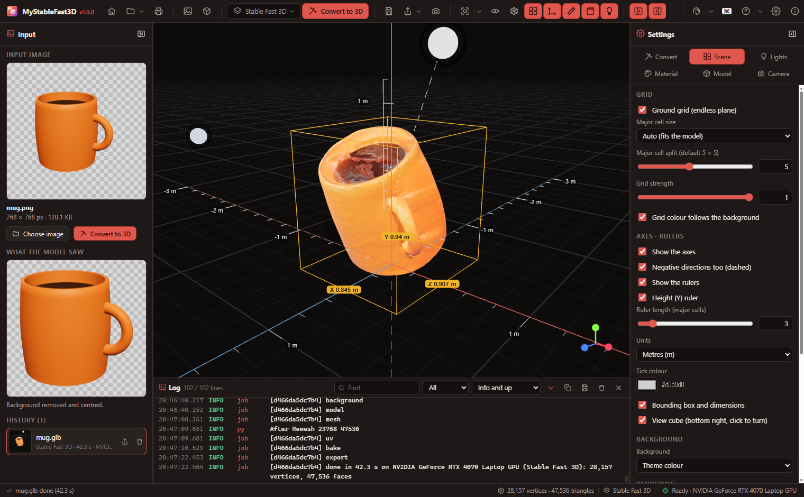
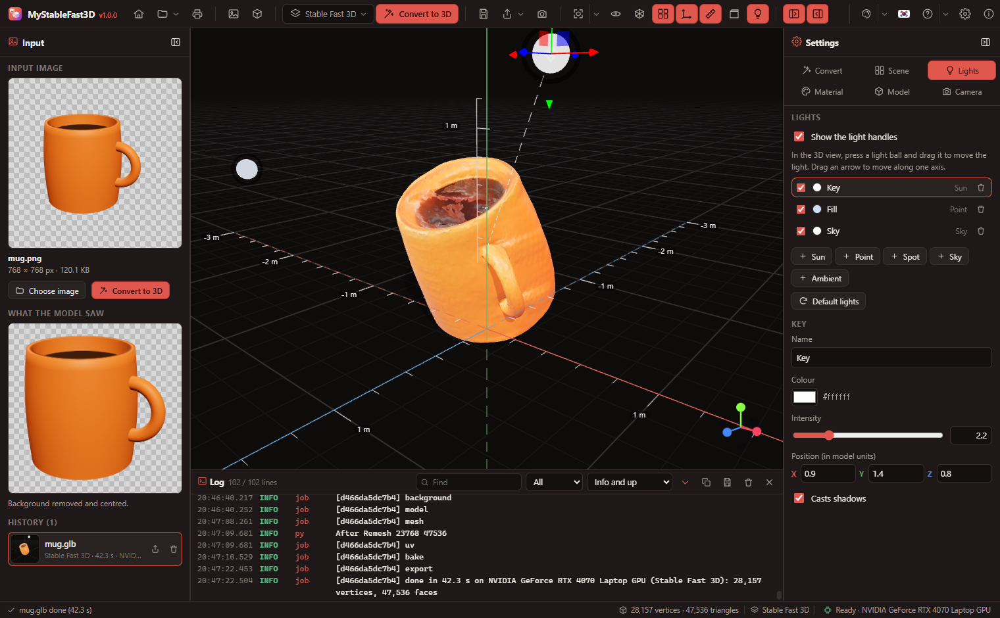
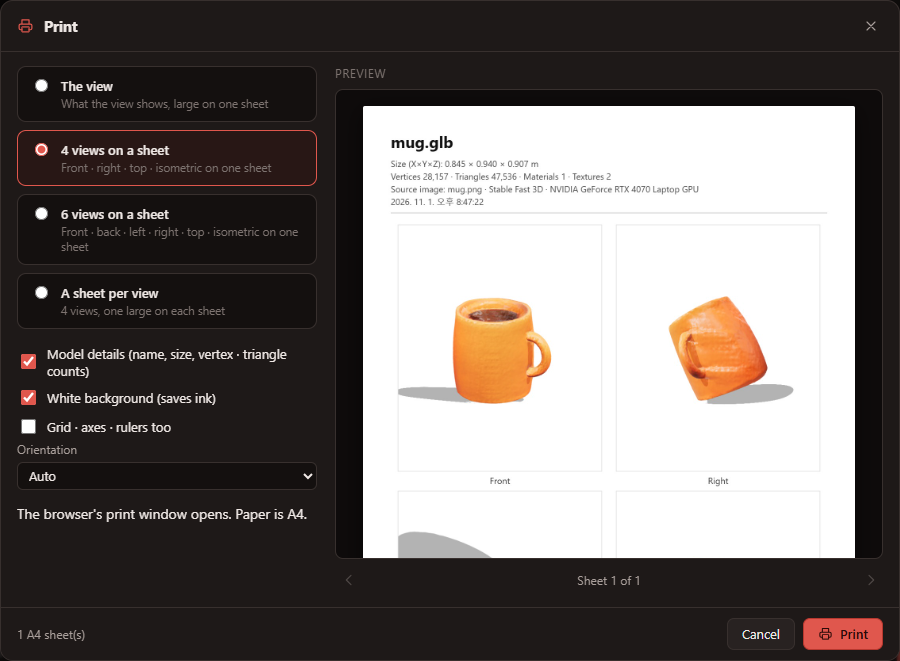
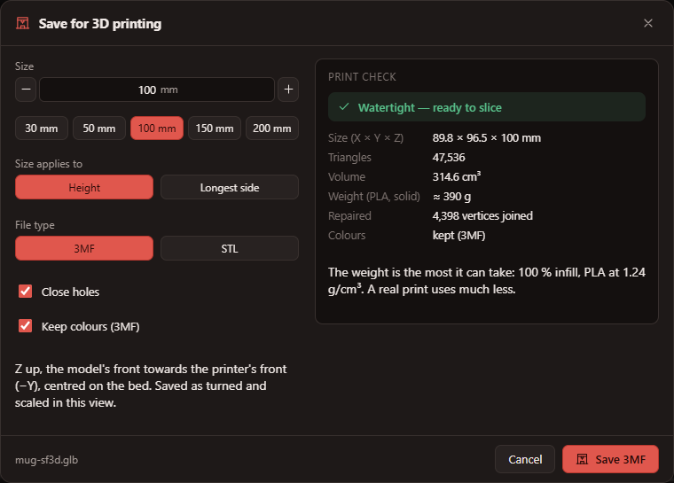
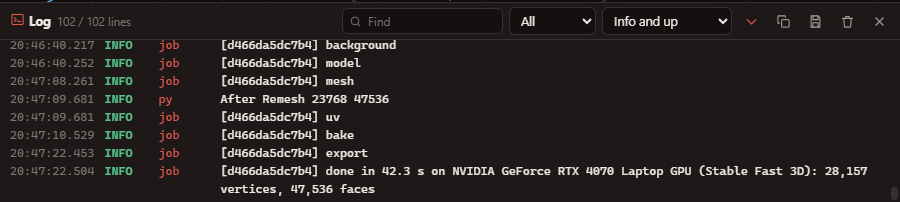
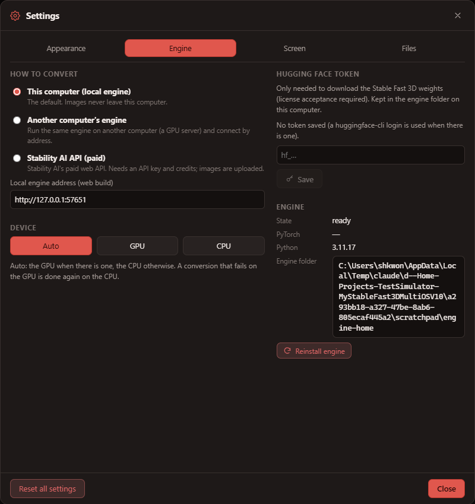

My3DObjects User’s Guide
Turn one picture into a 3D object, look at 3D files, and save them in other formats or ready for a 3D printer.
1. Introduction
My3DObjects runs Stable Fast 3D and SPAR3D (Stability AI), TripoSR (Tripo AI · Stability AI), TRELLIS (Microsoft) and Hunyuan3D (Tencent) on this computer to turn images into 3D objects. The Windows, macOS and Linux desktop apps and the web build share the same screen.
- Local by default — images never leave the computer. The paid Stability AI API is only used when you switch it on in Settings.
- The GPU when there is one, the CPU otherwise — nothing to choose. A conversion that fails on the GPU is redone on the CPU automatically.
- Installs itself — Python, PyTorch and the models are installed on first run; every step shows in the log panel.
- 3D viewer and converter — opens GLB, glTF, OBJ, STL, PLY, FBX, DAE, 3MF, 3DS, USDZ and more, exports GLB, glTF, OBJ, STL, PLY, USDZ, 3MF, AMF, DAE, VRML, VTK, PCD and XYZ, and prints views of the model on A4.
- Straight to a 3D printer — saves 3MF (with colours) or STL in millimetres, Z up, on the bed, with holes closed and faces wound consistently, and tells whether the mesh is watertight (chapter 15).
- Tutorial and examples — a 33-step tour on the real screen, and 17 example pictures and 3D files ready to open.

2. Installing and first run
- Run the installer (Windows
My3DObjects_1.0.0_x64-setup.exe, macOS.dmg, Linux.AppImage/.deb). - On first start the engine installs itself:
Step What Size (about) uv · Python Python 3.11 for the engine only (the system Python is not touched) 60 MB PyTorch CUDA build with an NVIDIA GPU, CPU build without, default build on a Mac (Apple GPU) CUDA 2.5 GB · CPU 200 MB Libraries transformers, trimesh, rembg … 500 MB Background model u2net 176 MB Conversion model the chosen model's code and weights (on first use) SF3D 4 GB · SPAR3D 4.5 GB · TripoSR 1.7 GB · TRELLIS 3.9 GB · Hunyuan3D 3.8–7.4 GB - When it is done the status bar shows Ready · (device). Later starts skip the installation.

3. The window
The window has no separate title bar: the toolbar is the title bar. The program icon sits at its left end, with the name and version when there is room. Drag an empty part of the toolbar to move the window, double-click it to maximise; minimise · maximise · close are at the right end, and the grip at the right end of the status bar (or the window edges) resizes it.
| Area | Contents |
|---|---|
| Toolbar (top) | Program icon, Home · File menu (with Save for 3D printing) · Print, open image / 3D file, the model picker and Convert to 3D, Save · Export · Save view, view controls (fit · directions · auto-rotate · wireframe · grid · axes · rulers · bounding box · light handles), panels. At the right end: theme · language · Help (guide · tutorial) · settings · about, then the window buttons |
| Input panel (left) | The input image, what the model saw (background removed), and this session's history |
| 3D view (centre) | The model, endless grid, axes, rulers, lights, view cube (bottom right) |
| Settings panel (right) | Convert · Scene · Lights · Material · Model · Camera tabs |
| Log panel (bottom) | Everything installation and conversion do |
| Status bar | What is happening and its progress, vertex · triangle counts, the model, engine state and device |
The side panels run down to the status bar; the log panel sits in the middle between them. Drag the inner edge of a side panel to resize it and use its header button to collapse it; drag the top edge of the log panel to change its height.
4. Start screen

The program opens on the start screen: open image, open 3D file, tutorial and guide buttons, the steps, recent files and examples, the engine state and the models, the supported formats and the background. The Home button shows or hides it at any time; untick Show this screen when the program starts to go straight to the 3D view. On the start screen the side and log panels are hidden and their toolbar buttons are off.
- Move and resize the panels: drag the ⠿ before a title to move it, the bottom-right corner to resize it. Panels snap to a 12-column grid: while dragging, a dashed silhouette shows where the panel will land and the panels in the way slide down. Auto arrange (top right) puts them back. The arrangement is kept.
- Background: pick one of 21 moving backgrounds (cubes, galaxy, stars, waves …), its opacity, speed, automatic change and random order. Also in Settings → Screen.
Examples
Open them from the start screen's Examples list or the File menu; they are also in samples/.
| Kind | Files |
|---|---|
| Pictures to convert — public examples (TRELLIS · TripoSR, MIT) | dragon · cottage · mushroom-house · mech · lantern · mailbox · biplane · locomotive · chair · hamburger · teapot · fox (teapot and fox have a grey background, to see background removal at work) |
| Pictures to convert — made here (transparent PNG) | robot · mug · pawn · tree · toy-car |
| 3D files (one per format) | robot.glb · shapes.gltf · mug.obj(+mtl) · pawn.stl · tree.ply · toy-car.usdz |
| Conversion results | mug-sf3d.glb (Stable Fast 3D) · robot-triposr.glb (TripoSR) |
Tutorial

At start-up the program asks Run the tutorial? — Start or Later; untick Ask again next time to stop the question (turn it back on in Settings → Screen → Tutorial). The tutorial also opens from the start screen, the toolbar's Help menu and Settings → Screen.
- 8 chapters, 33 steps: start screen, the window, image to 3D, the 3D view, lights, material and model, save · export · print, settings and engine.
- Each step opens an example, a tab or a menu to show it for real.
- →/Space next, ← previous, Esc close. Drag the card by its head, jump with the chapter list, ▶ auto-plays. It remembers where you stopped.
5. Image to 3D
- Open image (Ctrl+O), or drop a picture on the window. PNG, JPG (JFIF), WebP, AVIF, GIF (first frame), BMP, ICO, SVG and TIFF are read; a TIFF has no preview in the input panel but converts.
- Pick a model in the toolbar's model menu (chapter 6).
- Press Convert to 3D (F5). The steps (background → model → mesh → UV unwrap → texture bake) and progress show over the view; Cancel (Esc) stops it.
- The result appears in the view and in the History on the left. What the model saw is the picture with its background removed and centred.
Options (Settings panel → Convert, or the conversion settings window)
The button beside Convert to 3D on the toolbar (the sliders), or Settings window in the settings panel, opens the Conversion settings window. Its parameters come in three groups, Input image · Model · Surface clean-up, and changes are kept at once. ⟳ on a group puts that group back to the recommended values; Reset all to defaults puts back all of them.
| Option | What it does |
|---|---|
| Remove the background | Keeps only the object. A PNG that is already transparent is used as is. |
| Object size ratio | How much of the picture the object fills (0.5–1, default 0.85, SPAR3D 0.75) |
| Texture resolution (SF3D · SPAR3D) | Auto is 1024 px on a GPU, 512 on the CPU. 2048 is sharper but slower. |
| Remesh · vertex count (SF3D · SPAR3D) | Rebuilds an even mesh and reduces vertices (when the remeshing libraries are installed) |
| Mesh resolution · surface threshold (TripoSR) | Grid resolution for the surface (auto: GPU 256, CPU 192) and the density taken as surface |
| Stand upright | A photo taken from above gives a result that leans forward. A camera that was not held level makes it lean sideways too. When on (recommended), the angles within ±35° forwards-backwards (about X) and sideways (about Z) at which the object stands most squarely are found and applied. A tall object, such as a chess piece or a figure, is stood so that the line through the middles of its horizontal slices is vertical. Turn it off when the slant is the real shape. |
| Remove small pieces (%) | Removes loose pieces smaller than this share of the largest one (default 0.5); 0 keeps them all. |
| Subdivide faces | Splits each triangle in four before smoothing (×4 faces per level) so flat facets round off. Recommended 1 for SF3D, SPAR3D and TripoSR, 0 for TRELLIS. |
| Surface smoothing | Passes that even out a bumpy surface (the volume is kept); 0 leaves it. Recommended 10 for SF3D, SPAR3D and TripoSR, 2 for TRELLIS. |
| Inference steps · guidance · shape resolution · face limit · seed (Hunyuan3D) | The defaults are Tencent's demo values (30 steps, Turbo 5 · guidance 5 · resolution 256 · 40,000 faces · seed 1234). Another seed gives another shape. |
| Guidance · seed (SPAR3D) | Strength (default 3) and seed (default 0) of the diffusion model that draws the point cloud |
| Structure steps · structure guidance · detail steps · detail guidance · seed (TRELLIS) | Steps and strength of stage 1 (which voxels the object fills) and stage 2 (shape and colour in each voxel). The defaults are TRELLIS's demo values (12 · 7.5 · 12 · 3 · seed 0). Fewer steps are faster and rougher. |
Every option starts at the model's recommended value, which also ends its tooltip. Recommended values puts the model's (version's) options back. Options are kept per model and per version.
Apply to the result: the surface clean-up group (small pieces · subdividing · smoothing · standing upright) can be applied to the result on screen without converting again. The engine keeps the mesh the model first made and cleans that up again, so trying several values never wears the result down. Only for a result this engine has just converted.
6. Choosing a model

| Stable Fast 3D | SPAR3D | TripoSR | TRELLIS | |
|---|---|---|---|---|
| By | Stability AI | Stability AI | Tripo AI · Stability AI | Microsoft |
| Result | UV-unwrapped mesh with PBR textures (colour, normal, roughness, metalness) | Textured like SF3D, with a more faithful back | Vertex-coloured mesh | Vertex-coloured mesh, among the most detailed shapes and colours |
| Time (RTX 4070 laptop) | about 1.5 s | a few seconds | about 6 s | tens of seconds |
| Time (16-thread CPU) | about 30 s | about a minute | about 20 s | minutes |
| GPU memory | 6 GB or more | 10.5 GB (below 11 GB free: low-VRAM mode, about 7 GB) | 4 GB or more | 12 GB or more advised |
| License | Stability AI Community License (acceptance and token required) | MIT | ||
| Download | 4 GB | 3.6 GB + CLIP 0.9 GB | 1.7 GB | 2.7 GB + DINOv2 1.2 GB |
The SPAR3D and TRELLIS times are estimates from published figures.
A model is installed automatically the first time it converts (or when its download button in the menu is pressed). One model is in memory at a time; switching unloads the previous one.
SPAR3D
Stable Fast 3D's successor. A small diffusion model first draws a coloured point cloud of the whole object — the back the photo does not show included — and the mesh is then built from that point cloud and the photo. The result is a UV-unwrapped PBR-textured mesh like SF3D's. With less than 11 GB of GPU memory free it runs in its own low-VRAM mode, its parts taking turns on the GPU (a little slower). AlphaCLIP and the CLIP weights (0.9 GB) it uses to estimate materials and lighting are installed with it.
TRELLIS
Microsoft's 1.1 B-parameter model. Stage 1 finds which cells of a 64³ grid the object fills; stage 2 fills each of them with shape and colour, which is then turned into a mesh. This program decodes the mesh only, so the result is a vertex-coloured mesh (TRELLIS's Gaussians and texture baking need compiled CUDA renderers). Instead of xformers, spconv and kaolin it uses PyTorch code that computes the same, so it installs without a compiler and runs on Apple GPUs and the CPU too — minutes on a CPU. The DINOv2 image encoder (1.2 GB) is installed with it.
Hunyuan3D and versions
Hunyuan3D (Tencent) comes in several versions: pick one with the Version buttons under Hunyuan3D in the model menu, or the Version box in the settings panel. Each version has its own weights, options and install state. It makes the shape only (no texture, light grey): the texture models need compiled CUDA extensions and 20+ GB of GPU memory, so they are not included.
| Version | What it is | Download |
|---|---|---|
| 2.1 | The latest open release (June 2025), the most detailed. 10 GB of GPU memory advised | 7.4 GB |
| 2.0 · 2.0 Turbo | The standard model and a 5-step fast version | 4.9 · 5.3 GB |
| 2.0 mini · mini Turbo | The small model (0.6B), light and fast | 3.8 · 4.2 GB |
When the GPU has less free memory than a version wants, its image encoder, diffusion model and shape decoder take turns on the GPU (a little slower) — for example while another program uses GPU memory.
7. GPU and CPU
- Auto (default): an NVIDIA GPU (CUDA), the Apple GPU (MPS) on Apple-silicon Macs, the CPU otherwise.
- When a conversion fails on the GPU (memory, driver), the model moves to the CPU and the same image is converted again. The log says so, and the Settings panel's Last conversion shows "GPU failed → CPU".
- Settings panel → Convert → Device can fix it to the GPU or the CPU.
- A computer without a GPU gets the CPU build of PyTorch (about 200 MB) from the start.
8. Opening 3D files
Use Open 3D file (Ctrl+Shift+O) or drop the file on the window.
| Format | Extensions |
|---|---|
| glTF | .glb .gltf |
| Wavefront OBJ (+MTL, textures) | .obj |
| STL · PLY | .stl .ply |
| FBX · COLLADA · KMZ | .fbx .dae .kmz |
| 3MF · AMF · 3DS · LightWave | .3mf .amf .3ds .lwo |
| USD | .usdz .usda .usdc .usd |
| VRML · VTK | .wrl .vrml .vtk .vtp |
| Point clouds | .pcd .xyz |
Files a model refers to — an OBJ's MTL and textures, a .gltf's .bin and pictures — are found in the same folder by the desktop app. In the web build, select them together in the open dialog or drop them together.
9. Moving around
| Mouse | Does |
|---|---|
| Left drag | Orbit around the model |
| Right drag (or Shift+left) | Pan |
| Wheel | Zoom |
| Click the view cube (bottom right) | Look along that axis |
Right-click menus: right-click (without dragging) the 3D view, the input image, the history or the log for the commands that apply there, each with an icon — fit and directions, grid / axes / rulers, save · export · print · copy the view, clear the image, copy a log line and more.
Fit to view (F) frames the model and the lights; its arrow menu offers front · back · left · right · top · bottom · isometric. Auto-rotate circles slowly (speed in the Camera tab).
10. Grid · axes · rulers

- Grid: an endless plane on the ground (Y = 0). Each major cell is split 5 × 5 and the lines fade with distance. The major cell is automatic (a 1 m model gets 1 m cells with 20 cm squares) or chosen; divisions, strength and colour can be changed.
- Axes: X (red) · Y (green, up) · Z (blue); negative directions dashed.
- Rulers: ticks every small square along X and Z with the length at each major cell, and a height (Y) ruler at the model's back corner. Units: m · cm · mm · in or none.
- Bounding box: the box around the model with its X · Y · Z dimensions.
The background (theme colour · solid · gradient · environment), environment reflections, tone mapping, exposure and shadows are in the Scene tab too.
11. Lights

- Press a light ball in the 3D view and drag it to move the light. The selected light carries a move handle: drag an arrow to move along one axis, a square to stay in one plane.
- The dashed line shows where the light points (the model's centre).
- Kinds: Sun (directional, shadows) · Point · Spot · Sky (sky / ground colours) · Ambient. Each has on/off, colour, intensity, position, shadows, angle …
- Positions are kept in the model's size units, so lights keep their place around models of any size. The arrangement is remembered; Default lights restores the first three.
12. Materials and display
| Material | Shows |
|---|---|
| Original | The file's textures and materials |
| Clay | Plain grey, shape only (colour adjustable) |
| Normals | Face directions as colours |
| Vertex | Colours stored in vertices (TripoSR results) |
Wireframe, flat shading and back faces can be switched on. Display materials only change the view; saving uses the original materials.
13. Rotating and scaling
The Model tab shows the file (vertices · triangles · materials · textures, size) and sets rotation (degrees) and scale. Buttons like X −90° stand Z-up files upright. The model always stands on the ground; rotation and scale are applied when saving.
14. Saving and converting
Save (Ctrl+S, right of the File button) writes the model as GLB (as it was, when not rotated or scaled). Export (Ctrl+Shift+S) offers the other formats and the view as a PNG picture. Whatever format a model came in, it can be exported in any of these:
| Format | Textures | For |
|---|---|---|
| glTF Binary (.glb) | included | web, game engines, Blender (recommended) |
| glTF (.gltf) | included (embedded) | readable JSON |
| Wavefront OBJ (.obj) | no | wide compatibility |
| STL (.stl, binary / ASCII) | no | 3D printing (size and axes as they are — for a printer see chapter 15) |
| PLY (.ply, binary / ASCII) | vertex colours | point clouds, scans |
| USDZ (.usdz) | included | Apple AR Quick Look |
| 3D Manufacturing (.3mf) | material and vertex colours | 3D printing (slicers) |
| AMF (.amf) | material colours | 3D printing |
| COLLADA (.dae) | material and vertex colours | SketchUp and many 3D programs |
| VRML 2.0 (.wrl) | material and vertex colours | older CAD and science tools |
| VTK (.vtk) | vertex colours | ParaView, scientific visualisation |
| PCD · XYZ (.pcd, .xyz) | point colours | point clouds (vertices only, no faces) |
3MF, AMF and DAE files record the unit from Settings → Scene (the numbers are kept as they are).
Save view saves what the view shows as a PNG. A history item's save button saves that result as it is. Settings → Files can save each result next to its image automatically (desktop).
Printing

Print (Ctrl+P, right of Save) prints pictures of the model on A4.
| Option | Does |
|---|---|
| What to print | The view · 4 views on a sheet (front · right · top · isometric) · 6 views on a sheet · a sheet per view |
| Model details | Name, size, vertex · triangle · material · texture counts, source image and model, date at the top |
| White background · grid | An ink-saving white background; whether grid, axes and rulers show |
| Printer · copies · orientation (desktop) | The installed printers (default marked), 1–99 copies, auto · portrait · landscape. Print sends straight to that printer; System print window… opens the system's dialog |
| Preview | The sheets as they will print; ◀ ▶ when there are several |
15. Printing in 3D

Save for 3D printing (Ctrl+Shift+P; in the File menu, the Export menu and the 3D view's right-click menu) saves the model on screen as a file a slicer (PrusaSlicer, Bambu Studio, OrcaSlicer, Cura …) can use straight away. A plain export writes the numbers as they are (conversion results are about one unit = 1 m, Y up); this does the following.
| Option | Meaning |
|---|---|
| Size (mm) · size applies to | The height or the longest side becomes this long (proportions kept). The 30 · 50 · 100 · 150 · 200 mm buttons pick one directly. |
| File type | 3MF (recommended) — carries the unit (mm) and colours. STL — binary, no colours, opens in nearly every slicer. |
| Close holes | Finds open rims and closes them so the object is watertight — slicers need that to tell inside from outside. |
| Keep colours (3MF) | Writes vertex or texture colours into the 3MF, for multi-colour printers (Bambu AMS, Prusa MMU). |
The model is saved as shown (the Model tab's rotation and scale included) with Z up, its front towards the printer's front (−Y), centred on the bed at Z = 0. Vertices that coincide are joined (texture seams split them), faces that lost a corner and repeated faces are removed, holes are closed, faces wound against their neighbours are turned, and an inside-out model is turned the right way.
The Print check on the right shows the outcome at once: whether the mesh is watertight (if not, how many open edges and edges shared by three or more faces), its size (X × Y × Z mm), triangles, volume (cm³), the PLA weight at 100 % infill (1.24 g/cm³ — the most it can take; a real print uses much less) and what was repaired.
16. Log panel

Installation (packages, model downloads), model loading, each conversion step and errors collect here in order. Filter by source (app · launcher · engine) and level (debug · info · warning · error); find, copy, save to a file or clear. Ctrl+L shows or hides it; clicking the engine state in the status bar opens it.
17. Settings

| Tab | Contents |
|---|---|
| Appearance | Themes (20 dark · 20 light · custom), language, font · size · style |
| Engine | How to convert (this computer · another computer's engine · Stability AI API), device, Hugging Face token, restart · open folder · reinstall |
| Screen | Start screen, toolbar labels, status bar, log panel |
| Files | Default format, automatic saving |
How to convert
- This computer (local engine) — the default. Images stay on the computer.
- Another computer's engine — run the engine on a GPU machine with
npm run engine -- --host 0.0.0.0and enter its address (e.g.http://192.168.0.10:57660). - Stability AI API (paid) — off by default. Choosing it asks for confirmation and an API key; every conversion uses credits and uploads the image to Stability AI. While it is in use the status bar says "Stability AI API (paid)".
18. Web build
The web build opens the same screen in a browser; conversions run in the engine on this computer.
npm run web— the dev server (http://localhost:5196) and the engine (http://127.0.0.1:57660) together. The engine shares the desktop app's folder, so it installs once.npm run engine— the engine alone; takes--port,--hostand--home.npm run build— the web page indist/, for any web server; the engine address is set in Settings → Engine.
19. Shortcuts
| Keys | Does |
|---|---|
| Ctrl+O | Open image |
| Ctrl+Shift+O | Open 3D file |
| F5 or Ctrl+Enter | Convert to 3D |
| Esc | Cancel the conversion |
| Ctrl+S | Save (GLB) |
| Ctrl+Shift+S | Export (last format) |
| Ctrl+P | |
| Ctrl+Shift+P | Save for 3D printing |
| F1 | User’s guide |
| F | Fit to view |
| Ctrl+L | Log panel |
20. Data and uninstalling
| What | Windows | macOS / Linux |
|---|---|---|
| Settings | %APPDATA%\My3DObjects\settings.json | ~/Library/Application Support/My3DObjects · ~/.config/My3DObjects |
| Engine (Python, PyTorch, model code, background model, TRELLIS's DINOv2 · SPAR3D's CLIP) | %LOCALAPPDATA%\My3DObjects\engine | ~/Library/Application Support/My3DObjects/engine · ~/.local/share/My3DObjects/engine |
| Model weights | The shared Hugging Face cache ~/.cache/huggingface (used by other programs too) | |
Uninstalling on Windows asks separately whether to remove the engine (several GB) and the settings. The shared Hugging Face cache is left alone. To install the engine afresh, use Settings → Engine → Reinstall engine.
21. Troubleshooting
| Symptom | Remedy |
|---|---|
| "Cannot reach the engine" (web) | Check that npm run engine is running and the address in Settings → Engine. |
| "Token needed" | Accept the license and enter a token as in chapter 2, or use TripoSR or TRELLIS. |
| Installation failed | Read the error in the log panel and press Retry. PyPI, download.pytorch.org, github.com and huggingface.co must be reachable (for TRELLIS also dl.fbaipublicfiles.com, for SPAR3D openaipublic.azureedge.net). |
| A GPU, but the CPU is used | Update the NVIDIA driver, then Settings → Engine → Reinstall engine. |
| Odd results | Try a plainer background, another object size ratio, or another model. |
| TRELLIS fails on the GPU and runs on the CPU | Not enough GPU memory (12 GB or more advised). Close other programs, lower the structure and detail steps, or let the CPU finish. |
| The slicer reports holes or non-manifold edges | Turn on Close holes in Save for 3D printing; if the print check still says not watertight, use the slicer's repair. |
22. Licenses
My3DObjects is MIT-licensed. The models are not included; they are downloaded on first use under their own licenses.
- Stable Fast 3D — Stability AI Community License; commercial use is free below USD 1M annual revenue (registration required). Powered by Stability AI. This Stability AI Model is licensed under the Stability AI Community License, Copyright © Stability AI Ltd. All Rights Reserved.
- SPAR3D — Stability AI Community License (as Stable Fast 3D). AlphaCLIP, installed with it, is Apache-2.0; the CLIP weights MIT.
- TripoSR — MIT (Tripo AI & Stability AI)
- TRELLIS — MIT (Microsoft). FlexiCubes and DINOv2, installed with it, are Apache-2.0.
- Hunyuan3D 2.0 · 2.1 — Tencent Hunyuan 3D Community License. The EU, the UK and South Korea are outside its territory; commercial use above 1 million monthly users needs a separate license.
The compiled extensions (texture_baker, uv_unwrapper, torchmcubes, and TRELLIS's xformers · spconv · kaolin) are replaced by PyTorch / scikit-image code that does the same. Twelve example pictures (dragon … fox) are public examples from the TRELLIS and TripoSR repositories (MIT). See NOTICE.md and LICENSE-MODELS.md in the installation folder.